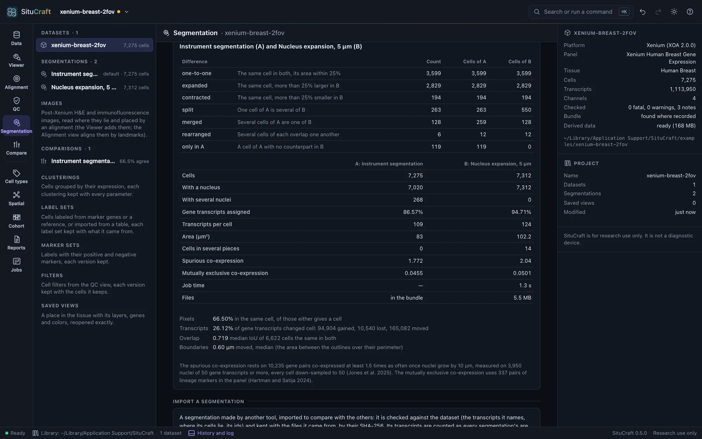
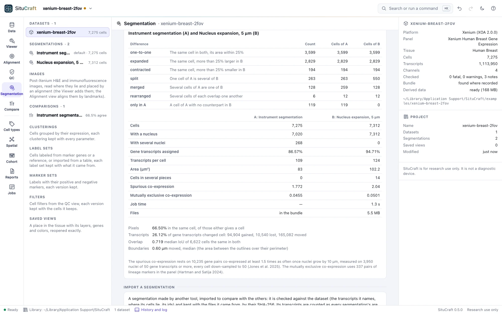
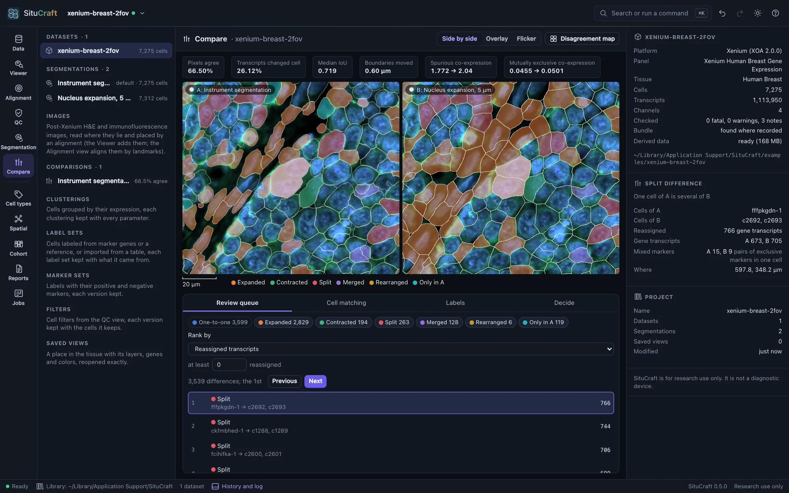
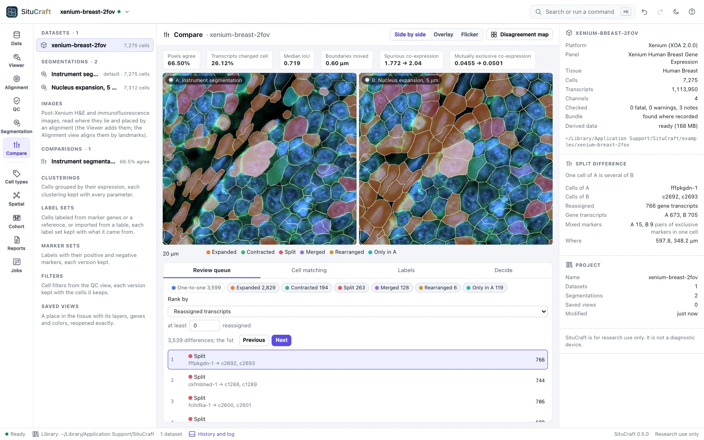
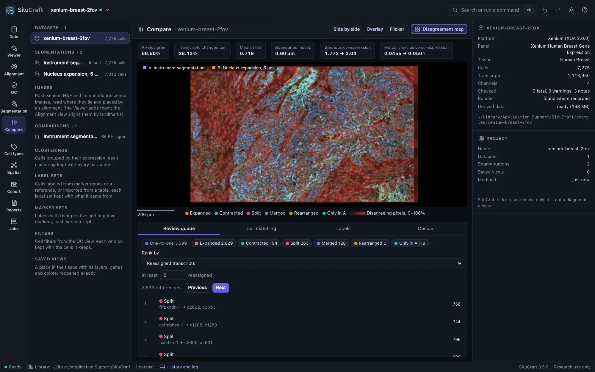
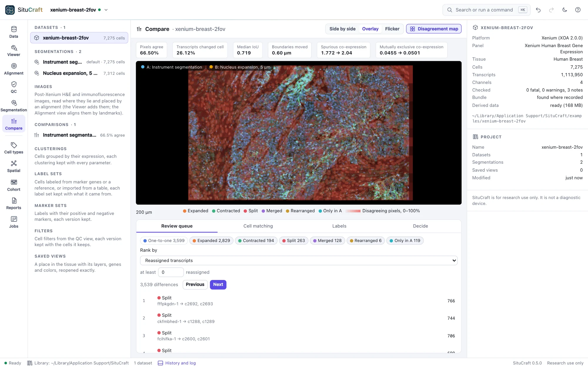

Comparing and deciding
Any two segmentations of a dataset are compared cell by cell: which cells correspond and how each differs, with measures of transcripts given to the wrong cell. The workspace shows both on the tissue, ranks the differences for review, and records the decision that promotes one.
Two segmentations compared


Compare two segmentations chooses an A and a B and shows which cells correspond and how each differs: one-to-one, expanded or contracted (by more than 25% of its area), split, merged, rearranged, or only in one. Two cells correspond when they share a nucleus, or when at least half of one lies within the other. Beside each segmentation's own numbers (cells, cells with a nucleus, assigned transcripts, transcripts per cell, areas), two measure transcripts given to the wrong cell: the spurious co-expression of gene pairs relative to nuclei alone (Jones et al. 2025; 1 is as in nuclei), and how often markers of different lineages are found in the same cell (the mutually exclusive co-expression rate of Hartman and Satija). Between the two, the pixels that agree, the transcripts that changed cell, and how far the boundaries moved. The comparison runs as a job and is kept with the project. One you no longer need can be removed from the project (Remove in the inspector): the two segmentations stay, and it can be made again at any time. A comparison a decision rests on stays, since the methods paragraph tells how the default was chosen from it. A comparison made by an earlier SituCraft whose list of differences this version does not read says so, and offers to compare the two segmentations again.
The workspace


Open (beside a comparison, or Compare in the views) shows the two on the tissue:
- Side by side with one camera, Overlay (B's outlines over A's, each in its color), or Flicker (A and B in turns). Cells are filled by the class of their difference; the Disagreement map shades each 50 µm region by the share of its pixels the two give to different cells.
- The review queue ranks the differences by reassigned transcripts, contamination (pairs of markers of different lineages found in one cell of B and not of A), disagreement or low counts, among the classes you keep and with at least the reassigned transcripts you set. Next and Previous (or
]and[) go through it; each difference opens where it lies, its cells lit in both, and is described in the inspector. Cell matching lists every difference, sortable. - Labels reads a label set of each segmentation through the comparison: what the choice changes in the cells' labels (Labels under two segmentations).


The measures' header says when one rests on little (few nuclei for the spurious co-expression, few marker pairs in the panel, cells without outlines).
Deciding
Decide promotes one segmentation as the dataset's default, keeps one for exploration, or rejects one, with a reason. Decisions are appended to the project with the comparison they rest on and never removed; the default cannot be rejected until another is promoted, and no segmentation is ever deleted.